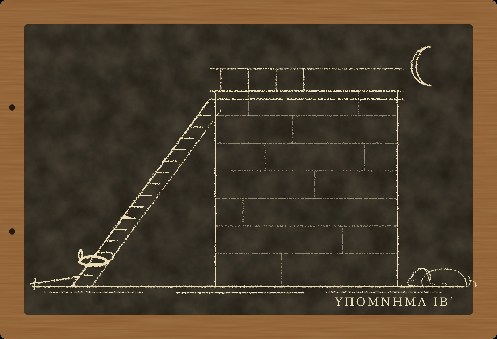

Гипомнема XII Звание

I
Летом двести сорок девятого года Рим узнал, что на Дунае снова есть Август. Пакациана, которого легионы провозгласили год назад, убили свои же солдаты, как и предсказывал сенатор Деций, и те же легионы, оставшись без Августа, провозгласили Августом самого Деция. Говорили, что Деций отказывался. Говорили, что ему пригрозили смертью, если не согласится. В Субуре говорили ещё многое, но я давно заметил, что в Субуре знают всё, кроме того, что было на самом деле.
Филипп собрал войско и ушёл на север. В Риме остался его сын. Мальчику было двенадцать, он был Августом уже третий год и, как мне рассказывали, учился у ритора писать речи, которые никогда не произнесёт. Его охраняла гвардия.
Я хранил тем летом клятвы подрядчиков, наследников и одного вольноотпущенника, который поклялся, что его попугай не умеет говорить, и через неделю был разоблачён самим попугаем. Никанор хранил со мной. Мы повторяли хранимое по вечерам у меня наверху. Ферокс лежал у двери и вздыхал, когда мы говорили слишком долго. Ему было столько лет, сколько молоссам не бывает, и он стал глух на левое ухо, а правое держал так, будто подслушивал за всех. Пами пропадал на крышах и возвращался с запахом чужой рыбы.
В сентябре пришла весть из-под Вероны. Филипп разбит и убит. Деций идёт к Риму.
Её привёз гонец к вечеру, и к ночи о ней знал весь город. Я стоял у окна, которое смотрит на закат, и видел, как над Виминалом, там, где за воротами лежит лагерь преторианцев, загораются огни. Огней было больше, чем бывает в обычную ночь. Никанор, который в тот вечер задержался у меня, встал рядом.
— Что они будут делать? — спросил он.
— То, что им позволяет присяга, — ответил я.
Утром Рим знал, что мальчика больше нет. Гвардия убила его в ту же ночь. Как именно, говорили по-разному, и я не стал слушать.
Рим рассудил быстро и спокойно, как рассуждает сытый человек о чужом горе. Гвардия присягала Августу, а не имени. Так считали с тех пор, как семь лет назад умер до луны Диодор, страж той самой присяги, и Рим решил, что имени в ней не было. Августом теперь был Деций, его признали легионы, и сенат тоже признает, когда ему скажут. Значит, мальчик стал врагом Августа, а враги Августа враги гвардии. Никто из убийц ничего не нарушил. Ни один не умрёт до луны.
Ни один и не умер. Я считал ночи до новолуния сам, по старой привычке, глядя из окна на запад. Убийцы мальчика дожили до луны все.
Десять лет назад, зимой двести тридцать девятого года, я впервые услышал присягу без имени, которую Феон с Палатина подложил в память Диодора, и признал, что она лучше моей. Присяга званию не умирает вместе с императором, а значит, гвардии не нужно убивать, чтобы сменить верность. Я тогда так думал. Я был прав наполовину. Гвардии действительно не нужно убивать, чтобы сменить верность. Ей нужно убить, чтобы верность сменилась сама.
II
Через три дня в коллегию пришло письмо от Деция. Писали его на Фламиниевой дороге, в лагере, где новый Август остановился на пути к Риму. Его прочли вслух, как читают письма Августа, и я, слушая, узнал руку, которой оно было составлено. Слова в нём не повторялись. Ни одно.
Гвардию следовало привести к новой присяге. С именем. «Я человек Императора Цезаря Гая Мессия Квинта Траяна Деция Августа. Его враги мои враги. Я не отнимал жизни у товарища по лагерю. Клянусь в этом перед знамёнами». Хранителями письмо называло двух стражей слов: Марка Аврелия Мнесарха и Никанора.
Последняя строка была моей. Я составил её одиннадцать лет назад для присяги Гордиану, и слово «крови» в ней заменил на «жизни» по совету кота. Евмен взял её целиком, не изменив ни слога. Он когда-то сказал мне, что я его ученик. Теперь он показывал мне, что он мой.
— Он вернул имя, — сказал Никанор, когда мы вышли из коллегии. — Семь лет вынимал имя из присяги и теперь вернул.
— Присяга без имени только что предала одного Августа. Деций не хочет быть вторым.
— А Евмен?
— Евмену нужно было, чтобы присяга без имени сработала один раз, — сказал я. — Она сработала. Теперь она ему не нужна.
Присягу назначили на седьмой день до луны, в святилище знамён. За это время префект собирался выяснить, кто из гвардейцев в ту ночь не пошёл к мальчику. Таких, как выяснилось, был один.
Его звали Секст Фурий. Ему было около тридцати, он служил в шестой когорте восьмой год и считался хорошим солдатом, пока не бросил меч у ворот лагеря, когда центурион повёл людей к покоям Августа. Меч он бросил молча и молча ушёл в город. Вернулся он на рассвете, сам, и сам сказал трибуну, что новой присяги давать не будет. Он не клянётся вовсе. Он христианин.
И в ту же ночь, под самое утро, у подножия лестницы в доме центурионов нашли мёртвым Луция Ведия Рустика. Рустик был центурионом шестой когорты. Именно он вёл солдат к мальчику. Он лежал внизу лицом к стене, с разбитой головой, и его лампа стояла рядом на ступени.
Кары тут никто не заподозрил. Рустик ни в чём не клялся с весны, а присяга его, если Рим прав, не нарушена. Значит, это убийство или падение. Падение было бы удобно всем, но у Рустика под затылком была вмятина, какая не бывает от одной ступени. Так сказал лекарь, а лекарь в лагере старый и видел много чего.
Префект рассудил, что убийца налицо. Фурий не пошёл с центурионом. Фурий ушёл и вернулся на рассвете. Фурий отказывается от присяги, а от присяги, как известно, отказывается только враг. Префект хотел казнить его за то и другое сразу и ждал только, когда Фурий откажется поклясться, что не убивал Рустика.
Фурий отказался.
III
Пресвитер поднялся ко мне на следующий вечер. Ферокс встретил его как родного, а Пами, посмотрев с балки, сказал, что гость пахнет чернилами и чем-то кислым, вроде больницы.
Пресвитеру было лет сорок. Он был бледен, сух, говорил медленно и отчётливо, как говорят люди, которые больше пишут, чем говорят, и долго подбирал каждое слово, прежде чем его выпустить. Звали его Новациан. Он сказал, что служит при епископе Фабиане, что Фурий из их общины и что крестили его этой весной.
— Мне сказали, что вы составляете клятвы, — сказал он. — Мы не клянёмся. Я пришёл не за клятвой.
— Тогда за чем?
— За советом, как спасти человека, который не может сказать то единственное, что его спасёт.
Я спросил, может ли Фурий хотя бы рассказать, где был той ночью.
— Он был с нами. В доме на Целии, где мы собираемся. Пришёл в середине ночи, без меча, и молился до рассвета. Его видели шестеро. Ни один из них не поклянётся.
— Ни один?
— Ни один. Сказано: не клянись вовсе, ни небом, ни землёй, ни головою своей. Да будет слово ваше: да, да; нет, нет.
Я сказал, что знаю эти слова. Их знает теперь любой страж слов, потому что христиане приходят к алтарю и молчат, и стражам приходится объяснять претору, почему.
Тогда я предложил ему то, что предлагал бы любому человеку, который не может поклясться. Пусть Фурий и шестеро свидетелей изложат правду на воске или на папирусе и поставят под ней свои имена. Рим не верит записанному, но претор может взять запись в дело, и если найдётся настоящий убийца, запись не помешает.
Новациан покачал головой.
— Тертуллиан, учитель африканских братьев, писал об этом лет сорок назад. Некоторые наши, занимая деньги у язычников, давали заимодавцам расписки с клятвой, а потом говорили, что ничего не произносили, только писали. Тертуллиан ответил, что рука пишет то, что продиктовала душа, и что согласие поклясться и есть клятва. Если Фурий запишет то, что вы называете правдой, и поставит имя, он поклянётся письмом. Мы этого не позволим.
— Рим не верит письму, — сказал я. — А вы не позволяете клясться даже письмом. Выходит, Фурию нечем говорить ни с тем, ни с другим.
— Выходит так, — согласился Новациан.
Он посидел молча, потом прибавил, тем же ровным голосом:
— У Тертуллиана есть ещё одна история. В Карфагене, при раздаче денег от Августа, солдаты по обычаю надели лавровые венки. Один не надел. Его спросили почему, он сказал, что христианин. Его увели в тюрьму. Братья в том легионе потом говорили, что он погиб из-за пустяка, из-за венка, и что мог бы поберечься ради мира с начальством. Тертуллиан ответил им, что солдат, принявший крещение, должен или оставить службу, или быть готов умереть. Многие не оставили. Фурий тоже не оставил.
— Вы его осуждаете?
— Половина братьев осуждает. Говорят, что надо было уйти весной, тихо, пока ничего не случилось. Тогда он не стоял бы сейчас между мечом и клятвой.
— А вы?
— Я пишу о Троице, — сказал Новациан, — и стараюсь не судить живых, пока не кончу.
Когда он ушёл, Пами спустился с балки на стол.
— Он не умеет врать, — сказал кот. — И не умеет не судить. Говорит одно, думает другое, но не врёт, потому что молчит.
— Ты слишком много понимаешь для кота.
— Я понимаю ровно столько, сколько мне нужно, чтобы получать рыбу, — ответил Пами. — Сегодня мне нужно было понять, что этот рыбы не принёс.
IV
На следующее утро я пошёл в лагерь. Никанор шёл со мной: мы были хранителями будущей присяги, и префект не мог не пустить нас. Ферокс увязался следом и шёл за нами всю дорогу от Субуры до Виминальских ворот, как ходят старые псы, медленно и не отставая.
Лагерь преторианцев лежит за городом, сразу за воротами, и похож на город внутри города: стены из красного кирпича, улицы под прямым углом, казармы в два этажа, святилище знамён в середине. Фурия держали в тюремной каморке у южной стены. Он сидел на соломе, без пояса и без сапог, и был спокоен так, как бывают спокойны только люди, которые уже всё решили.
Он рассказал мне о той ночи. Не под клятвой, потому что клятвы он не давал, и я его не просил.
Когда пришла весть о Вероне, гвардия собралась на плацу. Трибуны сказали, что Август теперь Деций, а мальчик враг Августа. Рустик построил свою центурию и повёл к покоям. Мальчика в те дни держали в лагере: говорили, что там безопаснее, чем на Палатине. По дороге Рустик сказал: «Держать. Не трогать. Возьмём его живым, пусть Деций решает». Фурий услышал это и пошёл. У ворот покоев он остановился и понял, что не войдёт. Он бросил меч на камни и ушёл.
— Почему?
— Потому что «держать» не значит ничего, — сказал Фурий. — Я видел лица. Держать они не собирались. Кто-нибудь ударит первым, и тогда все остальные станут теми, кто держал. Я не хотел быть тем, кто держал.
— Ты знаешь, кто ударил?
— Нет. Меня там не было.
Я спросил, видел ли он Рустика после этого. Он сказал, что нет. Он шёл через Виминал на Целий, к братьям, и вернулся на рассвете. Когда он подошёл к воротам, Рустик уже лежал под лестницей и вокруг стояли люди.
— Ты знаешь, что тебя казнят, если не поклянёшься?
— Знаю.
— Ты знаешь, что я мог бы составить тебе формулу, которую произнесёт христианин? Без имени бога, без «клянусь». Просто слова о том, что было. Претор, может быть, её не примет. Но, может быть, и примет.
Фурий посмотрел на меня так, как смотрел бы Ферокс, если бы Ферокс умел жалеть.
— Тогда это будет клятва, только хитрая, — сказал он. — Мне хватит и честной смерти.
На выходе из тюрьмы Никанор, молчавший всё это время, сказал мне:
— Учитель, ты хотел сделать с ним то же, что сделал с Тертуллой. Найти слова, которые правда, но не вся.
— Это моё ремесло.
— Это ремесло Евмена, — сказал Никанор. — Ты им тоже владеешь, и хорошо. Но этот человек тебе только что отказал, и правильно.
V
Дом центурионов стоял у северной стены лагеря. Это была узкая кирпичная постройка в два этажа, с деревянной лестницей снаружи, ведущей на галерею, куда выходили двери каморок. Рустик жил наверху, третья дверь от лестницы.
Лестница была крутая, в шестнадцать ступеней, без перил на нижнем пролёте. Ступени истёрты солдатскими сапогами посередине и целы по краям. На шестой ступени снизу ещё виднелось тёмное пятно, которое плохо отмыли.
Ферокс, едва мы вошли во двор, пошёл к лестнице сам, обнюхал нижние ступени, пятно на шестой, потом сел внизу и стал смотреть на галерею.
— Тут пахнет кровью, — сказал он мне, когда я наклонился. — Старой, этой, вчерашней. И пахнет человеком, который меня любит.
— Тебя все любят.
— Нет, — серьёзно сказал Ферокс. — Этот кормил. Вчера, когда мы пришли к воротам, он дал мне кусок. Хороший человек. Он тут ходил много, вверх и вниз, и стоял на этой ступени.
Ферокс указал носом на шестую ступень. На пятно.
Я спросил Никанора, видел ли он, кто вчера у ворот кормил пса. Никанор вспомнил. Гвардеец из шестой когорты, плотный, светловолосый, с родинкой у левого глаза, стоял в карауле и бросил Ферокса кусок лепёшки. Сказал: «Старик, а держится». Мы оба тогда решили, что он о собаке.
Пами в лагерь не пошёл. Он не любит места, где много сапог. Но вечером, когда я описал ему лестницу, ступени, пятно и лампу, кот потребовал описать лампу подробнее.
— Где она стояла?
— На второй ступени снизу. Рядом с телом.
— Ручкой куда?
Я закрыл глаза и вспомнил. Глиняная лампа с короткой ручкой, ручкой к стене.
— Ты свою ставишь ручкой к окну, на палец от края, — сказал Пами. — Если её уронить, она не встанет. Она ляжет на бок, и масло выльется. Если она стоит, значит, её поставили. Кто идёт по лестнице с лампой и падает, тот лампу роняет.
— А масло?
— Ты говоришь, пятно на шестой. А лампа на второй. Масла на ступенях нет. Я бы знал, ты бы сказал, что пахло маслом.
Не пахло. Ферокс бы сказал.
Я сидел над табличкой долго. Рустик не падал с лампой в руке. Его ударили на шестой ступени, о край, а потом стащили вниз, положили лицом к стене и поставили рядом лампу, чтобы было похоже, что он шёл со светом и оступился. Тот, кто ставил лампу, сделал это аккуратно, по-солдатски, ручкой к стене, как ставят в казарме, чтобы не задеть ногой.
VI
Гвардейца с родинкой звали Гней Тиций Бало. Я поговорил с ним на следующий день у ворот, где он снова стоял в карауле. Ему было за тридцать, он был из той же центурии, что Рустик и Фурий, служил десять лет и говорил о центурионе с уважением, как говорят о мёртвом начальнике, которого при жизни не любили.
Ферокс, увидев его, пошёл к нему, ткнулся головой в колени и сел, глядя снизу вверх. Бало потрепал его по загривку и сказал, что пёс у меня золотой, что такие и у них в деревне под Аквилеей были, только помельче. Я подумал о том, что пёс у меня действительно золотой. Ему всё равно, что сделал человек, если человек его кормит. Если бы мне пришлось описать его одной строкой, я написал бы: верен до глупости.
Я спросил Бало про ту ночь.
Он рассказал то же, что Фурий, только с другого конца. Да, Рустик сказал «держать». Да, они пошли. В покоях мальчик был не один, при нём были два раба и учитель-ритор. Рабы бросились к дверям, кто-то из солдат их ударил. Мальчик закричал. Потом кто-то ударил и мальчика. Кто, Бало не видел, было темно, все были в одних туниках и шлемах. Рустик кричал «держать», но было поздно.
— А Фурий?
— Фурий ушёл, — сказал Бало и пожал плечами. — Он всегда был со странностями. Говорят, по ночам ходил к этим своим. Я его не виню. Но Рустика он не любил.
— А ты?
— Рустик был хороший центурион, — сказал Бало. — Строгий.
Он не сказал, любил ли он Рустика. Он ответил на другой вопрос, которого я не задавал, и сделал это так естественно, что, будь я моложе, я бы не заметил.
Вечером Никанор пришёл ко мне с тем, что узнал от трибуна. Рустик за день до смерти просил у трибуна позволения написать префекту, которого назначит Деций. Трибун отказал: новый префект ещё не назначен, и писать некому. Рустик сказал, что подождёт, но что есть вещи, которые новый Август должен знать о той ночи.
— Новые Августы не любят тех, кто своей рукой убил Августа, — сказал Никанор. — Даже чужого. Сегодня ты убил его врага, завтра убьёшь его самого.
— Рустик хотел назвать того, кто ударил.
— И тот узнал.
Мы оба долго молчали. Я не мог поклясться, что Бало ударил мальчика, потому что этого не видел никто из тех, кто станет клясться. Я не мог поклясться, что Бало убил Рустика, потому что видел только пятно и лампу. Ферокс мог бы, но Ферокс не клянётся, а если бы и клялся, то в том, что Бало хороший человек.
— Через четыре дня присяга, — сказал Никанор. — Бало будет её давать.
— Будет, — сказал я. — И в ней есть строка, которую я сам написал.
VII
Присягу давали на седьмой день до луны, утром, как было назначено. Гвардия встала в строй на плацу перед святилищем знамён. В святилище, в полумраке, стояли значки когорт, орлы, медальоны с лицами Августов. С медальонов уже сняли лицо мальчика и ещё не повесили лицо Деция, и на шестах было пусто. Перед святилищем встали жрец и префект, а по сторонам мы с Никанором, сложив руки, как нас учили.
Жрец принёс жертву. Префект прочёл формулу. Потом когорты по одной, центурия за центурией, выходили вперёд, и каждый солдат произносил её сам, громко, глядя на значки. Так было и одиннадцать лет назад, при Гордиане, и тогда я стоял на этом же месте и слушал, как трибун Приск пропускает третье предложение. Я помнил это так хорошо, что у меня заболели колени.
Шестая когорта вышла после полудня. Центурия Рустика шла без центуриона, её вёл опцион. Фурия в строю не было: он сидел в каморке у южной стены и ждал казни.
Бало вышел седьмым. Он встал перед знамёнами, положил руку на грудь и начал ровно, чётко, как говорил и у ворот:
— Я человек Императора Цезаря Гая Мессия Квинта Траяна Деция Августа. Его враги мои враги. Я не отнимал...
Он остановился.
На плацу стояло несколько тысяч человек, и все они в этот миг перестали дышать. Я знаю это, потому что сам перестал. Жрец поднял голову. Префект медленно повернулся.
— ...жизни, — сказал Бало и снова остановился. Потом он опустил руку. — Я не могу, — сказал он тихо и очень ясно, как говорят то, что долго держали внутри. — Я не могу этого сказать.
— Ты отказываешься от присяги? — спросил префект.
— Нет. Я человек Августа. Его враги мои враги. Я не могу сказать третье.
Никто ему ничего не объяснял. Никто не напомнил ему, что отказ не доказывает вины, но ложится пятном. Никто не сказал, что христианин в соседней каморке только что отказался от той же присяги целиком и что его за это собираются казнить. Бало сам знал, что делает. Он, как и Гилар десять лет назад, и как Анфим, и как Мамерк, слишком хорошо помнил, во что верит Рим, чтобы солгать перед знамёнами.
Его отвели в сторону. Вечером, перед трибуном, при мне и при Никаноре, не под клятвой, он рассказал всё.
Это он ударил мальчика. Рустик велел держать, а мальчик бросился мимо рабов к двери, и Бало ударил его мечом, сам не зная зачем, потому что так получилось. Рустик видел. Ночью, когда всё кончилось, Рустик сказал ему: «Ты не держал. Деций об этом узнает». Под утро Бало пришёл к нему на галерею, хотел просить. Рустик шёл вниз с лампой. Они говорили на лестнице, Рустик отказал, Бало толкнул его, и центурион ударился затылком о край шестой ступени. Потом Бало стащил его вниз, положил лицом к стене и поставил лампу рядом. Поставил, а не бросил, по казарменной привычке, ручкой к стене.
— Я не хотел его убивать, — сказал Бало. — Я хотел, чтобы он молчал.
— Он и молчит, — сказал трибун.
VIII
Бало казнили через три дня, до луны, мечом, за ворота лагеря. Рим счёл это справедливым и не стал разбираться, за что именно: за мальчика или за центуриона. О мальчике Рим разбираться не хотел. О центурионе было удобнее.
Фурия префект собирался казнить вместе с Бало. Обвинение в убийстве с него сняли, но отказ от присяги остался.
Я говорил с префектом долго, в его покоях, при трибуне и при Никаноре. Я сказал ему, что по правилу об отказе отказ не доказывает вины, а ложится пятном. Что от присяги отказывается только враг, это верно, но Фурий не враг Августа. В ту ночь, когда вся гвардия подняла мечи, он один свой меч бросил. Его центурион велел мальчика держать, а не убивать, и Фурий единственный в шестой когорте никого не тронул. Я сказал, что новому Августу будет неприятно узнать, что первым человеком, казнённым в его гвардии, был тот, кто не стал убивать.
Префект думал долго. Потом сказал, что Фурия выгонят из гвардии без жалованья, без земли и без права служить, и что пусть идёт к своим, если они его примут.
Свои его приняли. Новациан пришёл к воротам лагеря встречать его и встал в стороне, сухой и прямой. Фурий вышел босиком, как сидел в каморке. Новациан снял с себя плащ и отдал ему. Я стоял у ворот с Фероксом и видел это. Ферокс пошёл к Фурию и ткнулся ему в колени, как тыкался в колени Бало три дня назад.
— Этот тоже хороший, — сказал он мне.
— Ты всем так говоришь.
— Нет, — сказал Ферокс. — Тот пах страхом. Этот не пахнет.
В середине октября в Рим вошли передовые отряды Деция. Сам Август был ещё в пути. С отрядами приехала канцелярия, а в канцелярии Евмен.
Он поднялся ко мне через два дня после приезда. Ферокс встал, вышел к нему на площадку, взял зубами за край плаща и потянул внутрь. Евмен вошёл, сел на свой табурет, положил руки на колени и, не здороваясь, спросил:
— Как звали гвардейца, который отказался от присяги целиком?
— Зачем тебе?
— Август спросил. Август хочет знать, сколько в его гвардии таких.
— Один, — сказал я. — И его уже нет в гвардии.
— Как его звали?
Я молчал. Евмен ждал, глядя на меня так же, как всегда, ожидая, что я заговорю первым. Мне пришло в голову, что имя Фурия знает весь лагерь и что он узнает его к вечеру от любого трибуна. Я сказал:
— Секст Фурий.
Тогда Евмен сделал то, чего я не видел за тридцать с лишним лет, что его знаю. Он достал из-за пазухи маленькую табличку, восковую, в деревянной рамке, раскрыл её на колене и записал имя костяным стилем. Он писал медленно, аккуратно, как пишут люди, которые редко пишут. Потом закрыл табличку и спрятал.
— Ты пишешь, — сказал я.
— Таких будет много, — ответил Евмен. — Столько я не запомню. Даже я.
Он встал и ушёл. Ферокс проводил его до лестницы и вернулся, ворча, как ворчит, когда не понимает, почему гость ушёл так скоро.
Вечером я достал табличку «Чужие кары» и записал на лицевой стороне четырнадцатое дело: «Ведий Рустик, центурион. Сброшен с лестницы гвардейцем, убившим мальчика-Августа. Кару никто не заподозрил». Потом подумал и прибавил ниже, тем же стилем: «Мальчик-Август, двенадцать лет. Убит гвардией по присяге званию. Не кара и не убийство. Так считает Рим».
На обороте, под пятью прежними строками, я записал шестую: «Секст Фурий, гвардеец. Не клялся ни в чём. Жив. Не знаю, что будет с теми, кто не клянётся, когда клясться прикажут всем».
Пами сидел на столе и читал, как он умеет, то есть смотрел на табличку и ждал, пока я прочту вслух.
— Твой враг теперь пишет, — сказал он, когда я прочёл. — Ты всю жизнь стыдился, что пишешь, а он не стыдился ничего. Теперь он пишет, а ты этого испугался.
— Я не испугался.
— Ты положил стиль, — сказал кот. — Когда ты не боишься, ты стиль держишь.
Я посмотрел на свою руку. Стиль лежал на столе. Я его не помнил, как положил.
Луна до новолуния оставалась ещё неделя. Мне незачем было её считать: в этот раз никто из тех, кого я знаю, не клялся во лжи. Но Евмен составлял список, и я знал, что этот список когда-нибудь станет формулой. Я подумал, что в Риме впервые за тысячу лет человек, который ни разу не солгал под клятвой, записывает имена тех, кто ни разу не клялся, и что ни одна кара на свете не помешает ему дописать.